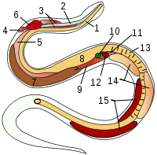

WTF Python
Le paradoxe objet
(1).real # même un simple `integer` est un objet. Des parenthèses sont nécessaires pour
# accéder aux attributs.
En python, tout est objet... donc une banale fonction est un objet,
comportant une methode __call__ qui permet l'appel via la syntaxe function( * arguments ).
Donc, une methode __call__ est un object callable qui ... possède une méthode __call__...
L'extrait suivant est valide:
>>> a.__call__() = a()
True
idem :
>>> a.__call__.__call__.__call__.__call__.__call__() == a()
True
On peut aller loin :) À l'heure actuelle, je n'ai pas une idée précise de ce qu'il se passe dans les internals de cpython. Parce que:
>>> def a(): print('yop')
>>> a._call_
<method-wrapper '_call_'of function object at 0x7f3e3db589d8>
[...]
>>> print(a._call_, a._call_._call_)
<method-wrapper '_call_'of function object at 0x7f3e3db589d8> <method-wrapper '_call_'of method-wrapper object at 0x7f3e3db6d320>
Si c'était un objet avec une référence __call__ sur lui même, ok, mais
0x7f3e3db6d320 et 0x7f3e3db589d8 ne réfèrent pas aux mêmes objets.
Multiples clefs

Pour chopper des valeures profondément enfouies dans des dictionnaires imbriqués avec reduce:
>>> from functools import reduce
>>> d = {
... 'a': 1,
... 'sub': {
... 'value': 5
... }
... }
>>> reduce(dict.get, ('sub', 'value'), d)
5
Un usage pas forcément super intuitif de la fonction reduce.
On peut même la tweaker en lui filant
lambda x, k: x.__getitem__(k), ce qui permet d'y imbriquer des listes en plus, et
de spécifier leur index dans le tuple en second argument de reduce .
Du genre:
reduce(lambda x, k: x.__getitem__(k),
('un', 'truc', 'bien', 'enfoui', 2, 'la_valeur'), d)
# équivalent à
d['un']['truc']['bien']['enfoui'][2]['la_valeur']
Fonctions spécialisées avec functools.partial
c4399ffdae1070fcd476157f4ab4109448d15b77
Rien de très inédit ici. Les application partielles des fonctions (partial application) sont un moyen élégant de spécialiser des fonctions. La spécialisation permet alors un niveau d'abstraction via la rétention des paramètres initiaux, qui sont alors "masqués" lors de l'usage final de la fonction spécialisée.
Voir aussi : closures.
>>> from functools import partial
>>> acc = partial(map, lambda x: x + 1)
>>> list(acc([1, 2, 3, 4]))
[2, 3, 4, 5]
list() permet ici d'itérer au fil du générateur, et ainsi d'obtenir une liste des résultats.
Le comportement des générateurs ainsi des fonctions "plus classiques" est évidemment conservé.
ps: Il me semble qu'un mec m'a montré une fois comment assigner une autre valeur à la valeur d'un entier littéral (du genre, vraiment '2 == 3' qui renvoit 'True'). Je suis quasi-sûr que c'était avec Python, mais aucune idée de la version. N'hésitez pas à vous manifester si cela vous dit quelque chose :)
Cela vaut aussi pour n'importe quoi d'autre que vous jugez utile de rajouter dans l'article